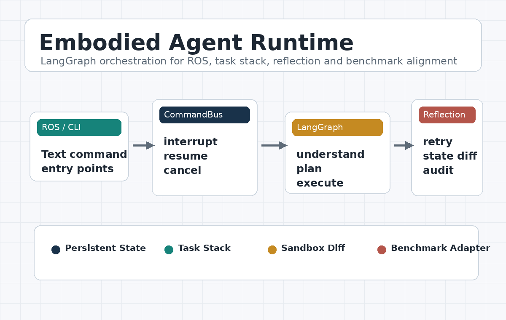

PUBLIC PORTFOLIO
张梦洋
智能体研发 / 具身规划 / 长尾感知与 PEFT
从数据清洗、监督微调，到可中断、可恢复、可反思的智能体 runtime，
再到论文级方法和严格评测协议，我做的是一条完整的研发链路。
4 Papers
2 Accepted
2 In Review
1 Agent Framework
5 Benchmarks

Core Strengths
What I consistently deliver
我能把数据治理、方法设计、实验协议、系统接入和结果展示打通。
不是只写方法，也不是只跑 demo，而是把一个项目做成能复现、能部署、能讲清楚的闭环。
Data curation
Method design
Rigorous evaluation
Runtime integration
Parallel deployment
Clear writing
Selected Works
公开状态：已接收 / 投稿中
WISA · Accepted
面向中文社交媒体长尾情感分析的轻量化 PEFT 框架。
- HSA + TMA 双模块
- 110M 对标 7B LLM
- Macro-F1 +6.12，吞吐量约 +55x
ECML-PKDD · Accepted · CCF B
严格 held-out 协议下的低资源长尾情感分析框架。
- Hierarchical pooling + prototype memory
- 5 / 6 配置 Tail-F1 最优
- 4 / 6 配置 Macro-F1 最优
KBS · Submission
Emotion-Cause Pair Extraction 的结构解耦与边界约束方案。
- Span-aware clause encoder
- DoRA biaffine scoring
- 10-fold F1 77.24%
ESWA · Submission
多层特征融合与对抗训练驱动的 ASTE 抽取框架。
- MLFF + AT-FGM
- 非生成式抽取路线
- 14lap F1 66.60
Embodied Agent Runtime
LangGraph Runtime
Embodied Agent Runtime
是面向 ROS / 前端 / CLI 的 LangGraph 常驻运行时，核心能力是 CommandBus、
ROS 文本接入、任务栈式中断与恢复、取消暂停、分层反思，以及多模型评测调度。
ALFRED SFT Brain
展示前期 ALFRED 轨迹清洗、Qwen2.5-7B LoRA 微调和下一步宏动作评估。
Understanding
Planning
Task Management
Reflection
ROS
ALFRED SFT
Engineering Projects
系统展示